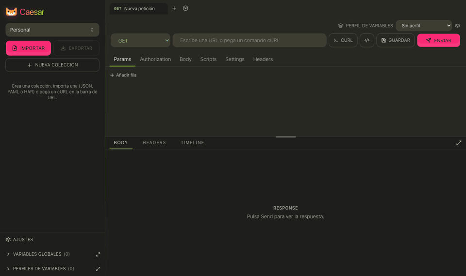

ホーム › 機能ガイド
Caesarガイド：すべての機能を一つずつ解説
Caesarは高速に動作するよう作られたデスクトップAPIクライアントです。即座に起動し、すべてをお使いのマシンに保管し、利用開始にアカウントは不要です。このガイドでは、最初のリクエストからテスト、GraphQL、WebSocket、チームでの共同作業まで、すべての機能を実際の動作を収めたGIFとともに紹介します。
Caesarとは？
Caesarは、Windows、macOS、Linux向けのデスクトップAPIクライアントです。HTTPリクエストの作成、送信、テストに加え、GraphQLとWebSocketにも対応し、コレクションに整理してチームと共有できます。色とキーボード操作でクリック数を減らす、すっきりしたインターフェースで行えます。
- ローカルファースト：ゲストモードでは、コレクションはお使いのデバイスに保存されます。オフラインでも、アカウントなしでも動作します。
- 本当に高速：ブラウザを同梱せず、RustとTauriで構築されています。
- 使い慣れた操作性：PostmanやInsomniaからお乗り換えの場合は、コレクションをインポートでき、
pm.*スクリプトもそのまま動作します。 - Fair Source（FSL）：コードは公開されており、無料で使用できます。オープンソースではなく、販売は禁止されています。
どんな方に向いていますか？日々APIをテストする方（バックエンド、フロントエンド、QA、モバイル）で、軽量でプライベートな、手間のかからないツールを求める方に最適です。また、インフラを構築せずにチームとコレクションを共有したい方にも向いています。
なぜこれほど速いのか
Caesarの速さは仕掛けではなく、作り方から生まれています。
Caesarのインストール
ダウンロードページまたはお使いのアプリストアから、システムに合ったインストーラーをダウンロードしてください。
| システム | ファイル / ストア |
|---|---|
| Windows | 64ビット版.exeインストーラー（.msiも用意） · Microsoft Storeに近日登場 |
| macOS（IntelおよびApple Silicon） | ユニバーサル.dmg。Appleによる署名と公証済み |
| Ubuntu（Snap Store） | sudo snap install caesar、またはUbuntu App Center（Snap Store）から |
| Linux | .deb（Debian/Ubuntu）またはAppImage（任意のディストリビューション） |
初回起動時には、特にWindows（SmartScreen）でシステムの警告が表示されることがあります。新しいプロジェクトでは通常のことで、警告ガイドでどこをクリックすればよいかを説明しています。その後、Caesarは自動で更新されます。
コマンドラインは不要です。Caesarはデスクトップアプリケーションです。利用にNodeやDocker、その他の追加インストールは必要ありません。
最初のリクエスト
Caesarを開き、新しいタブ（Ctrl+T）をクリックします。メソッド（GET、POST、PUT、PATCH、DELETE、HEAD、OPTIONS）を選び、URLを入力して送信をクリックするか、Ctrl+Enterを押します。
- 上部のバーにURLを入力します。
- 送信をクリックします。リクエストの各ステップ（名前解決、接続、送信、受信）がアニメーションで表示されます。
- 下に表示されるレスポンス（ステータス、時間、サイズ、ボディ）を確認します。
- Ctrl+Sを押して、コレクションに保存します。

通常の7つのメソッドに加えて、設定で追加のメソッド（例：WebDAVのメソッド）を追加できます。拒否されるのはCONNECTとTRACEのみです。
パラメーターとヘッダー
ParamsタブとHeadersタブはキーと値のエディタを使用します。行を追加し、チェックボックスで削除せずに有効/無効を切り替えると、URLが自動で更新されます。

- 行のチェックを外せば、その行を残したまま、なしの状態でテストできます。
- キーと値には
{{variables}}を使用できます（変数とプロファイルを参照）。 ?a=1&b=2を含むURLを貼り付けると、パラメーターが表に表示されます。
リクエストボディ
Bodyタブでは、APIが必要とする形式を選択します。
| タイプ | 使いどころ |
|---|---|
| JSON | モダンなREST API向け。構文チェックと色分け付きのエディタです。 |
| Text | XML、プレーンテキスト、その他の生データ向け。 |
| Form-data | ファイルを添付するフォーム向け（1ファイルあたり最大100 MB）。 |
| x-www-form-urlencoded | 従来型のフォーム向け。 |
| GraphQL | 専用のQueryとVariablesエディタ（GraphQLを参照）。 |

安全のため、Caesarはシステムのファイル選択ダイアログでご自身が選択したファイルのみを添付します。
レスポンスの確認
レスポンスは、ステータス（色分け）、時間、サイズとともに、3つのビューで表示されます。
- Pretty：整形され、色分けされたJSON。空の値を非表示にして読みやすくできます。
- Raw：届いたままのテキスト。
- Timeline：リクエストの各ステップとその所要時間。
JSONPathフィルターを使うと、必要な部分だけを絞り込めます（例：$.data[0].id）。またCtrl+Fでレスポンス内を検索できます（タブと検索を参照）。
レスポンスは最大10 MBまで読み込まれます。それより大きい場合は、ウィンドウがフリーズしないよう、Caesarが切り詰めて通知します。
cURLの貼り付けとコピー
APIのドキュメントやブラウザの開発者ツール、同僚などからcurlコマンドを受け取ったら、そのままURLバーに貼り付けてください。Caesarがメソッド、ヘッダー、ボディを含むリクエストを作成します。

逆方向も可能です。任意のリクエストをcURLとしてコピーして、チケットで共有したり、ターミナルで実行したりできます。専用のコマンドがあります（既定のショートカットはなく、割り当て可能です）。
認証
Authorizationタブで、認証方法を選択します。Caesarは次のタイプに対応しています。

Inheritオプションが最も便利です。コレクションまたはフォルダで認証を一度定義すれば、その中のすべてのリクエストがそれを使用します。トークンが変わっても、変更は1か所で済みます。
ヒント：トークンを変数（{{token}}）に保存し、認証でその変数を使いましょう。そうすれば、リクエストごとに貼り付ける必要がありません。
変数とプロファイル
変数を使うと、固定のURLの代わりに{{baseUrl}}と書けます。変数には3つのレベルがあります。
- グローバル変数：すべてのコレクションで有効です。
- コレクション変数：そのコレクションまたはフォルダのみで有効です。
- 変数プロファイル：名前付きのセット（Development、Staging、Productionなど）。送信の横のセレクターで有効化します。PostmanのEnvironmentsに相当します。

{{x}}形式の変数は、URL、ヘッダー、パラメーター、認証内で別の色で表示されるため、見落とすことがありません。- 変数をCtrl+クリックすると、リクエストを離れずに、その値を表示して編集できます。
- Ctrl+Spaceで変数ピッカーが開きます。
- 変数をシークレットに設定すると、一目では見えなくなります。
- Postmanからインポートすると、そのEnvironmentsはプロファイルに、Globalsはグローバル変数になります。
テストとスクリプト
Scriptsタブでは、レスポンスが届いたときにスクリプトが実行されます（結果はレスポンスパネルのタブに表示されます）。Postmanスタイルの構文（pm.*）を使用するため、すでにご存じの知識がそのまま使えます。
pm.test("responds 200", () => {
pm.expect(pm.response.code).to.equal(200);
});
const data = pm.response.json();
pm.test("returns users", () => {
pm.expect(data.length).to.be.above(0);
});
pm.testとpm.expectで、ステータス、ヘッダー、ボディを検証します。pm.response.json()で、パース済みのボディを読み取ります。pm.environment.set、pm.collectionVariables.set、pm.globals.setで値を保存します。
設計段階から安全。スクリプトは、JavaScriptのサブセット専用のインタープリターで実行されます。ネットワークもファイルシステムへのアクセスもevalもありません。そのため、インポートしたスクリプトが、自身のスコープ外で何かを行うことはできません。
リクエストの連携
典型的な例：サインインして、そのトークンを他のリクエストで使用します。ログインのリクエストにテストを設定します。
const r = pm.response.json();
pm.environment.set("token", r.access_token);以降は、どのリクエストでも、ヘッダーやBearer認証で{{token}}を使用できます。ログインを一度実行すれば、残りは認証済みになり、コピー&ペーストは不要です。
コレクションとフォルダ
コレクションは、リクエストを保管するノートのようなものです。サイドバーから作成し、フォルダの中にフォルダを追加し、ドラッグ&ドロップで並べ替えます。

- 各コレクションやフォルダには、独自の変数と認可設定を持たせることができ、含まれるすべてに継承されます。
- 自動で保存されます：Caesarは自動保存し、閉じてもタブと下書きを保持します。
- コレクションはチームと共有できます（同期とチームを参照）。
インポートとエクスポート
ゼロから始める必要はありません。Caesarは、すでにお持ちのものをインポートし、いつでもエクスポートできます。
| 形式 | インポート | エクスポート |
|---|---|---|
| Postman（v2.1のコレクションとEnvironments） | 可 | 可（JSON） |
| Insomnia | 可 | – |
| Caesar JSON | 可 | 可 |
| YAML | 可 | 可 |
| HAR（ブラウザから） | 可 | 可 |
| cURL | URLバーに貼り付け | cURLとしてコピー |

コレクションを共有する前に、Caesarはバックアップを作成して、何も失われないようにできます。
コードジェネレーター
</>ボタンで、アクティブなリクエストをプロジェクトにそのまま貼り付けられるコードに変換できます。cURL、Python（Requests）、JavaScript（Fetch、XHR）、Node.js（Axios）、Go、Rust、Java、Kotlin、C#、PHP、Ruby、PowerShell、Swift、Dartなど、20種類の言語とライブラリに対応しています。

インデント、タイムアウト、リダイレクトの追従などのオプションを調整でき、結果はワンクリックでコピーできます。
GraphQL
GraphQLボディを選択すると、Postmanと同じように、QueryエディタとVariablesエディタが表示されます。
- イントロスペクションでスキーマを読み込みます。
- 入力に合わせて、フィールドと型をオートコンプリートします。
- スキーマエクスプローラーで型とフィールドを閲覧できます。
- Beautifyでクエリを整形します。
- クエリから変数を生成でき、複数のオペレーションがある場合はオペレーションセレクターで選択できます。

GraphQLリクエストは、Postmanとともにインポート・エクスポートされます。
WebSocket
WebSocketリクエストを作成して接続し、タイムラインで会話を確認します。送受信した内容を、時刻とサイズとともに表示します。

- URLは
ws://またはwss://で記述します（http(s)を使用した場合は変換されます）。 - サブプロトコルをカンマ区切りで設定できます。
- テキストまたはバイナリのメッセージ（16進数またはbase64）を送信でき、バイナリはヘックスダンプで確認できます。
- URLでは
{{variables}}が使用できます。
タブと検索
必要なだけタブを開いて作業できます。Caesarは開いていたタブを記憶し、次回起動時に元の状態のまま復元します。

- Ctrl+Tで新規、Ctrl+Wで閉じる、Ctrl+1…9でN番目のタブへ移動。
- Alt+← / →で、前後に表示していたタブへ戻ります。
- Ctrl+Fで、レスポンスまたはエディタ内を検索します。
- 右クリックまたはCtrl+Shift+Wですべて閉じ、猫のいるホーム画面に移動します。
macOSでは、CtrlはCmdに置き換わります。
ワークスペース
ワークスペースは、コレクション、変数、タブを分けて管理する単位です。仕事用、個人プロジェクト用、クライアントごとなど、用途別に作成できます。サイドバーのセレクターで切り替えます。

ゲストモードと、Proに加入していないアカウントにはワークスペースが1つ含まれます。Proでは好きなだけ作成できます。
キーボードショートカット
Caesarのすべてのコマンドにはショートカットがあり、すべて変更できます。エディタはCtrl+/で開きます。

| 操作 | 既定のショートカット |
|---|---|
| リクエストを送信 | Ctrl+Enter |
| コレクションに保存 | Ctrl+S |
| 新しいタブ / タブを閉じる | Ctrl+T / Ctrl+W |
| URLバーへ移動 | Ctrl+L |
| 検索 | Ctrl+F |
| 変数を選択 | Ctrl+Space |
| 設定を開く | Ctrl+, |
| ショートカットの表示と編集 | Ctrl+/ |
複数のコマンドを連続実行するカスタムアクションを作成し、URLの横にお好みのボタンを配置することもできます。
テーマ、フォント、言語
Caesarには6つのテーマが付属しています：Monokai（既定）、Dracula、Tokyo Night、Nord、One Dark、そして明るい背景をお好みの方向けのGitHub Light。
フォントとテキストサイズの選択、アニメーションの無効化、サイドバーの幅の調整も可能です。インターフェースはスペイン語、英語、ドイツ語、フランス語、イタリア語で利用できます。
ネットワーク設定
設定では、リクエストの送信方法を制御できます。
| 設定 | 機能 |
|---|---|
| リダイレクトに従う | 最大10回までリダイレクトに従うか、まったく従いません。 |
| タイムアウト | 既定は30秒です。0または1時間を超える値にすると、最大の3600秒が使用されます。エラーで中断されずにデバッグするのに便利です。 |
| SSLを検証 | 自己署名証明書を使用するサーバーをテストするときにのみ、オフにしてください。 |
| HTTPバージョン | 自動、HTTP/1.1、またはHTTP/2。 |
| 追加メソッド | 通常のメソッドに加えて、カスタムメソッドを追加します。 |
同期とチーム
Proアカウントなら、同じコレクションを複数のコンピューターで使用でき、他の人と共有できます。
- 個人用同期：コレクション、変数、プロファイルがすべてのデバイスに表示されます。変更は項目ごとにマージされるため、2台のデバイスが互いの作業を上書きすることはありません。
- お使いのデバイスで暗号化：アップロードされるものは、お使いのコンピューターで暗号化されます。サービス側には、読み取れないデータだけが保存されます。
- リカバリーキー：ご自身で保管し、デバイスを紛失した場合にデータを復元できます。
- 新しいデバイスのリンク：お持ちの別のデバイスから、両方の画面で照合する6桁のコードを使って承認します。
- チーム：コレクションまたはワークスペースをコードで共有します。コードを入力した人が参加し、変更内容を確認できます。

重要：共有コレクションでは、コードを知っている人は誰でも内容を閲覧・変更できます。ロール（役割）はありません。編集を許可したい人にのみコードを共有してください。
ゲスト、アカウント、Pro
| モード | 含まれる機能 |
|---|---|
| ゲスト（無料） | リクエスト機能、テスト、GraphQL、WebSocket、インポート/エクスポート、コードジェネレーターのすべて。データはお使いのデバイスにのみ保存され、ワークスペースは1つ。 |
| アカウント（7日間のトライアル） | ゲストと同じ機能をローカルで利用でき、Proを有効化するかどうかを検討できます。Proに加入しないまま7日が経過すると、アカウントは削除されます。 |
| Pro（サブスクリプション） | 暗号化同期、チームと共有コレクション、ワークスペース無制限。 |
価格、請求期間、税金は、お支払い前にチェックアウトページで表示されます。設定 → アカウントとサブスクリプション → サブスクリプションを管理からいつでも解約でき、14日以内であれば返金を受けられます。詳しくは料金とサブスクリプションをご覧ください。
プライバシーとセキュリティ
- テレメトリーも分析機能もありません。Caesarは利用データを送信しません。
- インターフェースはネットワークリクエストを行いません。リクエストはRustのコアが実行し、URLを検証し、httpとhttpsのみを許可し、レスポンスとファイルのサイズを制限します。
- キーがシステムの外に出ることはありません：暗号化キーは、お使いのオペレーティングシステムのキーチェーンに保存されます。
- アプリケーションには、最小限の権限と厳格なセキュリティポリシーを適用しています。
- ゲストモードでは、データがお使いのデバイスの外に出ることはありません。
詳しくは、セキュリティとプライバシーとプライバシーポリシーをご覧ください。
アップデート
Caesarは自動で更新されます。起動時に新バージョンを確認し、ある場合はダウンロード、インストールして再起動します。タブと下書きは保持されます。すべてのパッケージは署名されており、アプリケーションはインストール前に署名を検証します。
- 設定 → 更新で無効にしたり、更新を確認をクリックしたりできます。
- LinuxでSnap Store（
sudo snap install caesarまたはUbuntu App Center）からCaesarをインストールした場合は、Snapが自動で更新します。AppImageはアプリ内で更新され、.debは手動で再インストールします。
ベストプラクティス
- 変化するもの（サーバー、バージョン、トークンなど）には変数を使い、環境ごとにプロファイルを使いましょう。
- 認証はコレクションで定義し、リクエストは「Inherit」のままにしておきましょう。
- 重要なリクエストにはすべて、少なくとも1つのテストを追加しましょう：ステータスとボディの確認です。
- リクエスト名は動詞とリソースで付け（「List users」「Create order」）、フォルダにまとめましょう。
- 重要なコレクションは、ときどきコピーをエクスポートしましょう。
- シークレットをURLに残さないでください：シークレット変数や認証を使いましょう。
- プロジェクトやクライアントごとに1つのワークスペースを使い、変数が混ざらないようにしましょう。
トラブルシューティング
リクエストが接続できない
URLがhttp://またはhttps://で始まっていること、未解決の変数（別の色で表示されます）がないこと、接続が確立されていることを確認してください。レスポンスのタイムラインを見ると、どのステップで失敗しているかが分かります。
SSL証明書エラー
自己署名証明書を使用するローカルサーバーをテストしている場合は、設定でSSLを検証をオフにしてください。実際のAPIでは、再びオンにしてください。
401または403が返される
Authorizationタブを確認してください。「Inherit」になっている場合は、コレクションの設定を確認します。トークンの有効期限が切れていないこと、そして変数が有効なプロファイルに存在することを確認してください。
リクエストがタイムアウトする
設定でタイムアウトを延長してください。0にすると最大値（1時間）が使用されます。デバッグ用です。
テストが何も実行されない
テストはレスポンスを受信した後に実行されるため、リクエストを送信する必要があります。スクリプトにエラーがある場合は、結果の横に表示されます。
同期や共有ができない
これらの機能にはProが必要です。ゲストモードや、トライアル中のアカウントでは、Caesarはローカルで動作します。すでにお支払い済みの場合は、アカウントとサブスクリプションで支払い済みなので確認するをクリックしてください。
よくある質問
CaesarはAPIのテストに向いていますか？
はい。REST、GraphQL、WebSocketに対応し、テスト、変数、プロファイル、Postmanのインポート、コード生成も備えた、オフラインで動作する軽量なアプリです。
無料でオープンソースですか？
ゲストモードでは無料で、コードも公開されていますが、オープンソースではありません。FSLライセンスを採用しており、販売は禁止されています。各バージョンは2年後にMITライセンスになります。
コレクションはどこに保存されますか？
お使いのデバイスに保存されます。同期をオンにするかチームと共有した場合にのみデバイスの外に出ますが、その場合は暗号化されます。
Postmanのコレクションを移行できますか？
はい。サイドバーから、コレクションファイル（およびプロファイルになるEnvironments）をインポートしてください。
Postmanのスクリプトは動作しますか？
pm.test、pm.expect、pm.response.json()を使ったテストと、変数を保存する関数は動作します。CaesarはJavaScriptのサブセット用の安全なインタープリターを使用するため、外部ライブラリやネットワークに依存するスクリプトは実行できません。
コマンドラインやCIとの連携はありますか？
現時点では、Caesarはデスクトップアプリケーションです。リクエストをcURLやコードとしてエクスポートして、スクリプトで利用できます。
アカウントは必要ですか？
いいえ。アカウントが必要なのは、同期やチームでの作業のときだけです。
どのシステムで動作しますか？
Windows（.exeと.msi。Microsoft Storeに近日登場）、macOS（IntelおよびApple Silicon）、Linux（sudo snap install caesarによるUbuntu App Center / Snap Store、.deb、AppImage）で動作します。